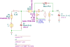

"A1_controller_noiseWLI_p"
.source V1
.detector V_out
.param L_s=120m R_s=875
C1 4 out C value={tau_i/R_i} vinit=0
C2 1 0 C value={C_s} vinit=0
C3 out 0 C value={C_ell} vinit=0
L1 2 1 L value={L_s} iinit=0
N1 out 0 in 0 N
R1 2 3 R value={R_s} noisetemp={T} noiseflow=0 dcvar=0 dcvarlot=0
R3 1 4 R value={R_i} noisetemp={T} noiseflow=0 dcvar=0 dcvarlot=0
V1 3 0 V value=0 noise=0 dc=0 dcvar=0
X1 4 0 in PM18_noise ID={ID} IG=0 W={W} L={L}
.end
| RefDes | Nodes | Refs | Model | Param | Symbolic | Numeric |
|---|---|---|---|---|---|---|
| C1 | 4 out | C | value | $\frac{\tau_{i}}{R_{i}}$ | $\frac{\tau_{i}}{R_{i}}$ | |
| vinit | $0$ | $0$ | ||||
| C2 | 1 0 | C | value | $C_{s}$ | $C_{s}$ | |
| vinit | $0$ | $0$ | ||||
| C3 | out 0 | C | value | $C_{\ell}$ | $C_{\ell}$ | |
| vinit | $0$ | $0$ | ||||
| F1_X1 | 4 0 10_X1 0 | F | value | $\frac{0.5 s}{\pi f_{T X1} \left(- \frac{c_{dg X1} s}{g_{m X1}} + 1\right)}$ | $- \frac{90.72 s \left(- \frac{ID L \left(- \frac{2.107 \cdot 10^{4} ID L \left(1 + \frac{2.5 \cdot 10^{-9}}{L}\right)^{2}}{W} + 1.0\right)}{W} + 0.0001923 \left(- \frac{ID L \left(- \frac{2.107 \cdot 10^{4} ID L \left(1 + \frac{2.5 \cdot 10^{-9}}{L}\right)^{2}}{W} + 1.0\right)}{W}\right)^{0.5} + 1.48 \cdot 10^{-7}\right)^{0.5} \left(0.008222 L W \left(0.6667 - \frac{4.933 \cdot 10^{-8} \left(2599.0 \left(- \frac{ID L}{W} + 3.7 \cdot 10^{-8}\right)^{0.5} + 1.5\right)}{\left(\left(- \frac{ID L}{W} + 3.7 \cdot 10^{-8}\right)^{0.5} + 0.0001923\right)^{2}}\right) + 0.0007461 L W \left(1.0 + \frac{1.48 \cdot 10^{-7} \left(2599.0 \left(- \frac{ID L}{W} + 3.7 \cdot 10^{-8}\right)^{0.5} + 1.5\right)}{\left(\left(- \frac{ID L}{W} + 3.7 \cdot 10^{-8}\right)^{0.5} + 0.0001923\right)^{2}}\right) + 2.0 \cdot 10^{-12} L + 7.0 \cdot 10^{-10} W\right)}{ID \left(1.0 + \frac{3.175 \cdot 10^{-8} W s \left(- \frac{ID L \left(- \frac{2.107 \cdot 10^{4} ID L \left(1 + \frac{2.5 \cdot 10^{-9}}{L}\right)^{2}}{W} + 1.0\right)}{W} + 0.0001923 \left(- \frac{ID L \left(- \frac{2.107 \cdot 10^{4} ID L \left(1 + \frac{2.5 \cdot 10^{-9}}{L}\right)^{2}}{W} + 1.0\right)}{W}\right)^{0.5} + 1.48 \cdot 10^{-7}\right)^{0.5}}{ID}\right)}$ | |
| H1_X1 | 4 2_X1 1_X1 10_X1 | H | value | $\frac{1}{g_{m X1} \left(- \frac{c_{dg X1} s}{g_{m X1}} + 1\right)}$ | $- \frac{90.72 \left(- \frac{ID L \left(- \frac{2.107 \cdot 10^{4} ID L \left(1 + \frac{2.5 \cdot 10^{-9}}{L}\right)^{2}}{W} + 1.0\right)}{W} + 0.0001923 \left(- \frac{ID L \left(- \frac{2.107 \cdot 10^{4} ID L \left(1 + \frac{2.5 \cdot 10^{-9}}{L}\right)^{2}}{W} + 1.0\right)}{W}\right)^{0.5} + 1.48 \cdot 10^{-7}\right)^{0.5}}{ID \left(1.0 + \frac{3.175 \cdot 10^{-8} W s \left(- \frac{ID L \left(- \frac{2.107 \cdot 10^{4} ID L \left(1 + \frac{2.5 \cdot 10^{-9}}{L}\right)^{2}}{W} + 1.0\right)}{W} + 0.0001923 \left(- \frac{ID L \left(- \frac{2.107 \cdot 10^{4} ID L \left(1 + \frac{2.5 \cdot 10^{-9}}{L}\right)^{2}}{W} + 1.0\right)}{W}\right)^{0.5} + 1.48 \cdot 10^{-7}\right)^{0.5}}{ID}\right)}$ | |
| I1_X1 | 0 1_X1 | I | value | $0$ | $0$ | |
| noise | $4 \Gamma_{X1} N_{s N18} T g_{m X1} k$ | $- \frac{2.52 \cdot 10^{-22} ID \left(- \frac{4.505 \cdot 10^{6} ID L}{W} + 0.5\right)}{\left(- \frac{6.757 \cdot 10^{6} ID L}{W} + 1.0\right) \left(- \frac{ID L \left(- \frac{2.107 \cdot 10^{4} ID L \left(1 + \frac{2.5 \cdot 10^{-9}}{L}\right)^{2}}{W} + 1.0\right)}{W} + 0.0001923 \left(- \frac{ID L \left(- \frac{2.107 \cdot 10^{4} ID L \left(1 + \frac{2.5 \cdot 10^{-9}}{L}\right)^{2}}{W} + 1.0\right)}{W}\right)^{0.5} + 1.48 \cdot 10^{-7}\right)^{0.5}}$ | ||||
| dc | $0$ | $0$ | ||||
| dcvar | $0$ | $0$ | ||||
| I2_X1 | 4 0 | I | value | $0$ | $0$ | |
| noise | $0$ | $0$ | ||||
| dc | $0$ | $0$ | ||||
| dcvar | $0$ | $0$ | ||||
| L1 | 2 1 | L | value | $L_{s}$ | $0.12$ | |
| iinit | $0$ | $0$ | ||||
| N1 | out 0 in 0 | N | ||||
| R1 | 2 3 | R | value | $R_{s}$ | $875.0$ | |
| noisetemp | $T$ | $300.0$ | ||||
| noiseflow | $0$ | $0$ | ||||
| dcvar | $0$ | $0$ | ||||
| dcvarlot | $0$ | $0$ | ||||
| R3 | 1 4 | R | value | $R_{i}$ | $R_{i}$ | |
| noisetemp | $T$ | $300.0$ | ||||
| noiseflow | $0$ | $0$ | ||||
| dcvar | $0$ | $0$ | ||||
| dcvarlot | $0$ | $0$ | ||||
| V1 | 3 0 | V | value | $0$ | $0$ | |
| noise | $0$ | $0$ | ||||
| dc | $0$ | $0$ | ||||
| dcvar | $0$ | $0$ | ||||
| V1_X1 | 2_X1 in | V | value | $0$ | $0$ | |
| noise | $f^{- AF_{P18}} k_{f X1}$ | $\frac{4.638 \cdot 10^{-18} \left(\left(- \frac{ID L}{W}\right)^{0.5} + 0.001102\right)^{2}}{L W f^{1.25}}$ | ||||
| dc | $0$ | $0$ | ||||
| dcvar | $0$ | $0$ |
| Name | Symbolic | Numeric |
|---|---|---|
| $AF_{P18}$ | $1.25$ | $1.25$ |
| $CGBO_{P18}$ | $1.0 \cdot 10^{-12}$ | $1.0 \cdot 10^{-12}$ |
| $CGSO_{P18}$ | $3.5 \cdot 10^{-10}$ | $3.5 \cdot 10^{-10}$ |
| $CJB_{0 P18}$ | $0.001$ | $0.001$ |
| $C_{OX N18}$ | $\frac{\epsilon_{0} \epsilon_{SiO2}}{TOX_{N18}}$ | $0.008222$ |
| $C_{OX P18}$ | $\frac{\epsilon_{0} \epsilon_{SiO2}}{TOX_{P18}}$ | $0.008633$ |
| $E_{CRIT P18}$ | $1.0 \cdot 10^{9}$ | $1.0 \cdot 10^{9}$ |
| $I_{0 P18}$ | $2 C_{OX P18} N_{s P18} U_{T}^{2} u_{0 P18}$ | $1.48 \cdot 10^{-7}$ |
| $KF_{P18}$ | $4.2 \cdot 10^{-28}$ | $4.2 \cdot 10^{-28}$ |
| $LDS_{P18}$ | $1.8 \cdot 10^{-7}$ | $1.8 \cdot 10^{-7}$ |
| $L_{s}$ | $0.12$ | $0.12$ |
| $N_{s N18}$ | $1.38$ | $1.38$ |
| $N_{s P18}$ | $1.35$ | $1.35$ |
| $R_{s}$ | $875$ | $875.0$ |
| $T$ | $300$ | $300.0$ |
| $TOX_{N18}$ | $4.2 \cdot 10^{-9}$ | $4.2 \cdot 10^{-9}$ |
| $TOX_{P18}$ | $4.0 \cdot 10^{-9}$ | $4.0 \cdot 10^{-9}$ |
| $\Theta_{P18}$ | $0.4$ | $0.4$ |
| $U_{T}$ | $\frac{T k}{q}$ | $0.02585$ |
| $V_{KF P18}$ | $0.2$ | $0.2$ |
| $Vth_{P18}$ | $-0.425$ | $-0.425$ |
| $c$ | $2.998 \cdot 10^{8}$ | $2.998 \cdot 10^{8}$ |
| $\epsilon_{0}$ | $\frac{1}{c^{2} \mu_{0}}$ | $8.854 \cdot 10^{-12}$ |
| $\epsilon_{SiO2}$ | $3.9$ | $3.9$ |
| $k$ | $1.381 \cdot 10^{-23}$ | $1.381 \cdot 10^{-23}$ |
| $\mu_{0}$ | $4.0 \cdot 10^{-7} \pi$ | $1.257 \cdot 10^{-6}$ |
| $q$ | $1.602 \cdot 10^{-19}$ | $1.602 \cdot 10^{-19}$ |
| $u_{0 P18}$ | $0.0095$ | $0.0095$ |
| $\Gamma_{X1}$ | $\frac{0.6667 IC_{X1} + 0.5}{IC_{X1} + 1}$ | $\frac{- \frac{4.505 \cdot 10^{6} ID L}{W} + 0.5}{- \frac{6.757 \cdot 10^{6} ID L}{W} + 1.0}$ |
| $IC_{CRIT X1}$ | $\frac{0.0625}{N_{s P18}^{2} U_{T}^{2} \left(\Theta_{P18} + \frac{1}{E_{CRIT P18} L}\right)^{2}}$ | $\frac{320.7}{\left(1 + \frac{2.5 \cdot 10^{-9}}{L}\right)^{2}}$ |
| $IC_{X1}$ | $- \frac{ID L}{I_{0 P18} W}$ | $- \frac{6.757 \cdot 10^{6} ID L}{W}$ |
| $VGS_{X1}$ | $- 2 N_{s P18} U_{T} \log{\left(e^{\left(IC_{X1} \left(1 + \frac{0.5 IC_{X1}}{IC_{CRIT X1}}\right)\right)^{0.5}} - 1 \right)} + Vth_{P18}$ | $- 0.0698 \log{\left(e^{\frac{12008011676498299 \sqrt{1235} \sqrt{\pi} \sqrt{- \frac{ID L \left(- \frac{202219915215783969 \pi ID L \left(\frac{2}{5} + \frac{1}{1000000000 L}\right)^{2}}{9648437500000 W} + 1\right)}{W}}}{287735780621250}} - 1 \right)} - 0.425$ |
| $c_{db X1}$ | $CJB_{0 P18} LDS_{P18} W$ | $1.8 \cdot 10^{-10} W$ |
| $c_{dg X1}$ | $CGSO_{P18} W$ | $3.5 \cdot 10^{-10} W$ |
| $c_{gb X1}$ | $2 CGBO_{P18} L + \frac{0.3333 C_{OX P18} L W \left(N_{s P18} - 1\right) \left(x_{X1} + 1\right)}{N_{s P18}}$ | $0.0007461 L W \left(1.0 + \frac{1.48 \cdot 10^{-7} \left(2599.0 \left(- \frac{ID L}{W} + 3.7 \cdot 10^{-8}\right)^{0.5} + 1.5\right)}{\left(\left(- \frac{ID L}{W} + 3.7 \cdot 10^{-8}\right)^{0.5} + 0.0001923\right)^{2}}\right) + 2.0 \cdot 10^{-12} L$ |
| $c_{gs X1}$ | $CGSO_{P18} W + C_{OX N18} L W \left(0.6667 - 0.3333 x_{X1}\right)$ | $0.008222 L W \left(0.6667 - \frac{4.933 \cdot 10^{-8} \left(2599.0 \left(- \frac{ID L}{W} + 3.7 \cdot 10^{-8}\right)^{0.5} + 1.5\right)}{\left(\left(- \frac{ID L}{W} + 3.7 \cdot 10^{-8}\right)^{0.5} + 0.0001923\right)^{2}}\right) + 3.5 \cdot 10^{-10} W$ |
| $c_{iss X1}$ | $c_{dg X1} + c_{gb X1} + c_{gs X1}$ | $0.008222 L W \left(0.6667 - \frac{4.933 \cdot 10^{-8} \left(2599.0 \left(- \frac{ID L}{W} + 3.7 \cdot 10^{-8}\right)^{0.5} + 1.5\right)}{\left(\left(- \frac{ID L}{W} + 3.7 \cdot 10^{-8}\right)^{0.5} + 0.0001923\right)^{2}}\right) + 0.0007461 L W \left(1.0 + \frac{1.48 \cdot 10^{-7} \left(2599.0 \left(- \frac{ID L}{W} + 3.7 \cdot 10^{-8}\right)^{0.5} + 1.5\right)}{\left(\left(- \frac{ID L}{W} + 3.7 \cdot 10^{-8}\right)^{0.5} + 0.0001923\right)^{2}}\right) + 2.0 \cdot 10^{-12} L + 7.0 \cdot 10^{-10} W$ |
| $f_{T X1}$ | $\frac{0.5 g_{m X1}}{\pi c_{iss X1}}$ | $- \frac{0.001754 ID}{\left(- \frac{ID L \left(- \frac{2.107 \cdot 10^{4} ID L \left(1 + \frac{2.5 \cdot 10^{-9}}{L}\right)^{2}}{W} + 1.0\right)}{W} + 0.0001923 \left(- \frac{ID L \left(- \frac{2.107 \cdot 10^{4} ID L \left(1 + \frac{2.5 \cdot 10^{-9}}{L}\right)^{2}}{W} + 1.0\right)}{W}\right)^{0.5} + 1.48 \cdot 10^{-7}\right)^{0.5} \left(0.008222 L W \left(0.6667 - \frac{4.933 \cdot 10^{-8} \left(2599.0 \left(- \frac{ID L}{W} + 3.7 \cdot 10^{-8}\right)^{0.5} + 1.5\right)}{\left(\left(- \frac{ID L}{W} + 3.7 \cdot 10^{-8}\right)^{0.5} + 0.0001923\right)^{2}}\right) + 0.0007461 L W \left(1.0 + \frac{1.48 \cdot 10^{-7} \left(2599.0 \left(- \frac{ID L}{W} + 3.7 \cdot 10^{-8}\right)^{0.5} + 1.5\right)}{\left(\left(- \frac{ID L}{W} + 3.7 \cdot 10^{-8}\right)^{0.5} + 0.0001923\right)^{2}}\right) + 2.0 \cdot 10^{-12} L + 7.0 \cdot 10^{-10} W\right)}$ |
| $f_{\ell X1}$ | $\left(\frac{0.5 \pi KF_{P18} f_{T X1} \left(- 0.3333 x_{X1} + 0.6667 + \frac{\left(N_{s P18} - 1\right) \left(0.3333 x_{X1} + 0.3333\right)}{N_{s P18}}\right)}{C_{OX P18} \Gamma_{X1} N_{s P18} T k}\right)^{\frac{1}{AF_{P18}}}$ | $8.014 \cdot 10^{-7} \left(- \frac{ID \left(0.7531 - \frac{3.654 \cdot 10^{-8} \left(2599.0 \left(- \frac{ID L}{W} + 3.7 \cdot 10^{-8}\right)^{0.5} + 1.5\right)}{\left(\left(- \frac{ID L}{W} + 3.7 \cdot 10^{-8}\right)^{0.5} + 0.0001923\right)^{2}}\right) \left(- \frac{6.757 \cdot 10^{6} ID L}{W} + 1.0\right)}{\left(- \frac{4.505 \cdot 10^{6} ID L}{W} + 0.5\right) \left(- \frac{ID L \left(- \frac{2.107 \cdot 10^{4} ID L \left(1 + \frac{2.5 \cdot 10^{-9}}{L}\right)^{2}}{W} + 1.0\right)}{W} + 0.0001923 \left(- \frac{ID L \left(- \frac{2.107 \cdot 10^{4} ID L \left(1 + \frac{2.5 \cdot 10^{-9}}{L}\right)^{2}}{W} + 1.0\right)}{W}\right)^{0.5} + 1.48 \cdot 10^{-7}\right)^{0.5} \left(0.008222 L W \left(0.6667 - \frac{4.933 \cdot 10^{-8} \left(2599.0 \left(- \frac{ID L}{W} + 3.7 \cdot 10^{-8}\right)^{0.5} + 1.5\right)}{\left(\left(- \frac{ID L}{W} + 3.7 \cdot 10^{-8}\right)^{0.5} + 0.0001923\right)^{2}}\right) + 0.0007461 L W \left(1.0 + \frac{1.48 \cdot 10^{-7} \left(2599.0 \left(- \frac{ID L}{W} + 3.7 \cdot 10^{-8}\right)^{0.5} + 1.5\right)}{\left(\left(- \frac{ID L}{W} + 3.7 \cdot 10^{-8}\right)^{0.5} + 0.0001923\right)^{2}}\right) + 2.0 \cdot 10^{-12} L + 7.0 \cdot 10^{-10} W\right)}\right)^{0.8}$ |
| $g_{m X1}$ | $- \frac{ID}{N_{s P18} U_{T} \left(IC_{X1} \left(1 + \frac{IC_{X1}}{IC_{CRIT X1}}\right) + 0.5 \left(IC_{X1} \left(1 + \frac{IC_{X1}}{IC_{CRIT X1}}\right)\right)^{0.5} + 1\right)^{0.5}}$ | $- \frac{0.01102 ID}{\left(- \frac{ID L \left(- \frac{2.107 \cdot 10^{4} ID L \left(1 + \frac{2.5 \cdot 10^{-9}}{L}\right)^{2}}{W} + 1.0\right)}{W} + 0.0001923 \left(- \frac{ID L \left(- \frac{2.107 \cdot 10^{4} ID L \left(1 + \frac{2.5 \cdot 10^{-9}}{L}\right)^{2}}{W} + 1.0\right)}{W}\right)^{0.5} + 1.48 \cdot 10^{-7}\right)^{0.5}}$ |
| $k_{f X1}$ | $\frac{KF_{P18} \left(\frac{2 IC_{X1}^{0.5} N_{s P18} U_{T}}{V_{KF P18}} + 1\right)^{2}}{C_{OX P18}^{2} L W}$ | $\frac{4.638 \cdot 10^{-18} \left(\left(- \frac{ID L}{W}\right)^{0.5} + 0.001102\right)^{2}}{L W}$ |
| $x_{X1}$ | $\frac{\left(IC_{X1} + 0.25\right)^{0.5} + 1.5}{\left(\left(IC_{X1} + 0.25\right)^{0.5} + 0.5\right)^{2}}$ | $\frac{1.48 \cdot 10^{-7} \left(2599.0 \left(- \frac{ID L}{W} + 3.7 \cdot 10^{-8}\right)^{0.5} + 1.5\right)}{\left(\left(- \frac{ID L}{W} + 3.7 \cdot 10^{-8}\right)^{0.5} + 0.0001923\right)^{2}}$ |
| Name |
|---|
| $L$ |
| $ID$ |
| $C_{\ell}$ |
| $\tau_{i}$ |
| $C_{s}$ |
| $W$ |
| $R_{i}$ |
Go to A1_controller_noiseWLI_p_index
SLiCAP: Symbolic Linear Circuit Analysis Program, Version 3.0.1 © 2009-2024 SLiCAP development team
For documentation, examples, support, updates and courses please visit: analog-electronics.tudelft.nl
Last project update: 2025-01-30 10:02:33